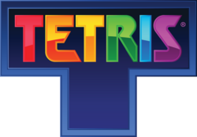
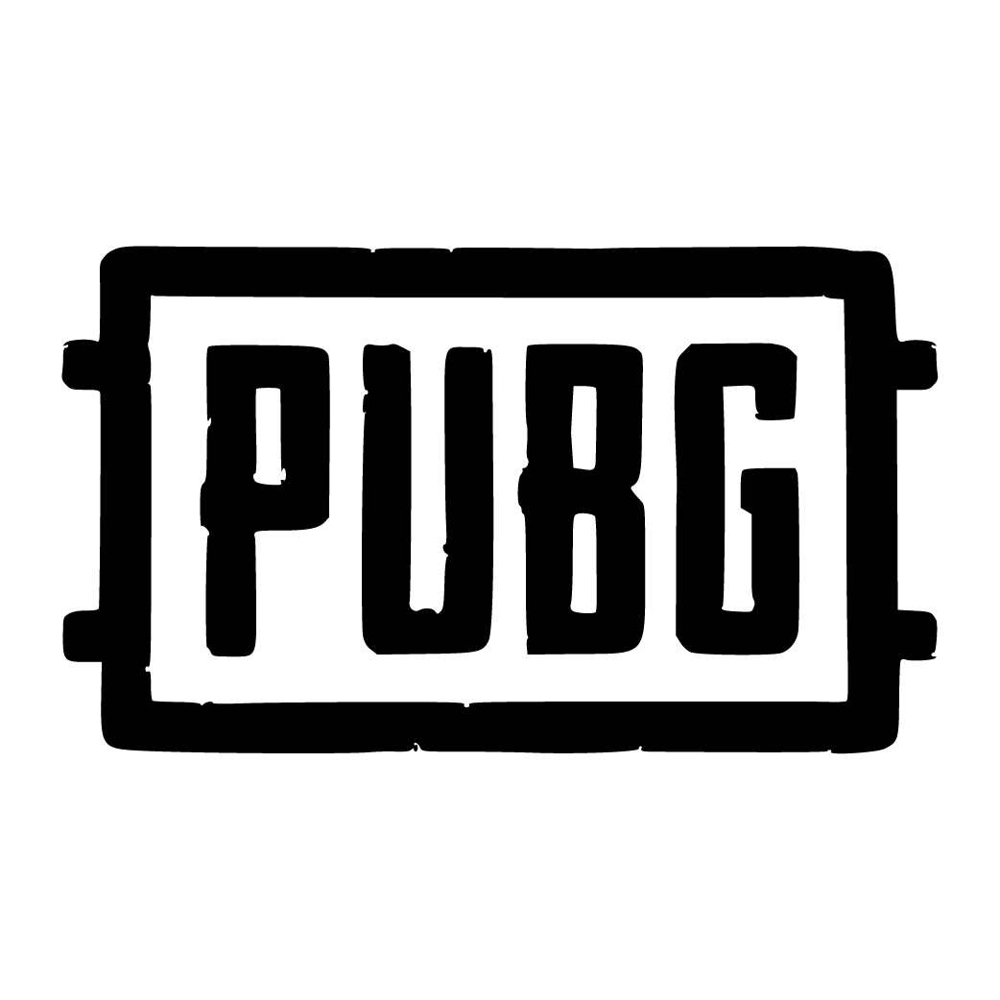
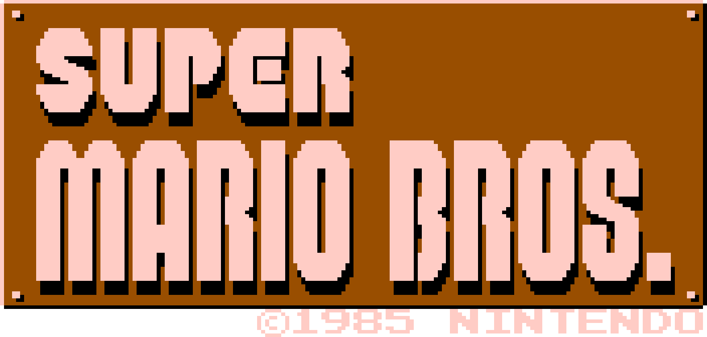

| Videojuego | Desarrollador | Lanzamiento (año) | Ventas | Imagen |
|---|---|---|---|---|
| Minecraft | Mojang Studios | 2011 | 238 M | |
| Grand Theft Auto V | Rockstar Games | 2013 | 215 Millones de copias | |
| Tetris | EA | 1984 | 100 Millones de copias |  |
| Wii Sports | Nintendo | 2006 | 82 Millones de copias | |
| PUBG | PUBG Studios | 2016 | 75 Millones de copias |  |
| Super Mario Bros | Nintendo | 1985 | 58 Millones de copias |  |
| Red Dead Redemption 2 | Rockstar Games | 2018 | 50 Millones de copias | |
Durante bastante tiempo ha sido complicado señalar cual fue el primer videojuego, principalmente debido a las múltiples definiciones de este que se han ido estableciendo, pero se puede considerar como primer videojuego el Nought and crosses, también llamado OXO, desarrollado por Alexander S.Douglas en 1952. El juego era una versión computerizada del tres en raya que se ejecutaba sobre la EDSAC y permitía enfrentar a un jugador humano contra la máquina. En 1958 William Higginbotham creó, sirviéndose de un programa para el cálculo de trayectorias y un osciloscopio, Tennis for Two (tenis para dos): un simulador de tenis de mesa para entretenimiento de los visitantes de la exposición Brookhaven National Laboratory. Este videojuego fue el primero en permitir el juego entre dos jugadores humanos. Cuatro años más tarde Steve Russell, un estudiante del Instituto de Tecnología de Massachussets, dedicó seis meses a crear un juego para computadora usando gráficos vectoriales: Spacewar. En 1966 Ralph Baer empezó a desarrollar junto a Albert Maricon y Ted Dabney, un proyecto de videojuego llamado Fox and Hounds dando inicio al videojuego doméstico. Este proyecto evolucionaría hasta convertirse en la Magnavox Odyssey, el primer
Los dispositivos de entrada son los que permiten al jugador manejar el juego. Si bien es habitual el uso de un dispositivo de entrada externo —como son los clásicos teclado y ratón, el mando, o el joystick—, las plataformas portátiles de hoy en día (smartphones, tablets, videoconsolas de bolsillo...) permiten jugar mediante su pantalla táctil o mediante el movimiento del propio aparato (gracias al uso de giroscopios y acelerómetros). Otros dispositivos de entrada pueden ser los detectores de movimiento, entre los que destacan los dispositivos de mano (por ejemplo el Wiimote de Wii), los de presión (alfombras o soportes con sensores), los de dispositivos de realidad virtual como la PlayStation VR y los de captura de imágenes, caso del Kinect de Xbox. También se puede emplear la voz en aquellos videojuegos que la soporten a través de procesadores de voz. Los dispositivos de salida son aquellos que muestran las imágenes y los sonidos del videojuego: un televisor, un monitor o un proyector para el vídeo, y unos altavoces o auriculares para el audio. Los equipos más modernos utilizan sonido digital con Dolby Surround con efectos EAX y efectos visuales modernos por medio de las últimas tecnologías en motores de videojuego y unidades de procesamiento gráfico.
A principios de los años 90 las videoconsolas dieron un importante salto técnico gracias a la competición de la llamada "generación de 16 bits" compuesta por la Mega Drive, la Super Nintendo Entertainmet de Nintendo, la PC Engine de NEC, conocida como Turbografx en occidente y la CPS Changer de (Capcom). En el 2000 Sony lanzó la anticipada PlayStation 2 y Sega lanzó otra consola con las mismas características técnicas de la Dreamcast, nada más que venia con un monitor de 14 pulgadas, un teclado, altavoces y los mismos mandos llamados Dreamcast Drivers 2000 Series CX-1. Microsoft entra en la industria de las consolas creando la Xbox en 2001.